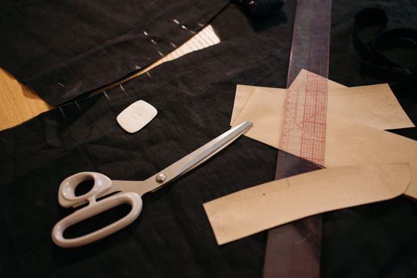
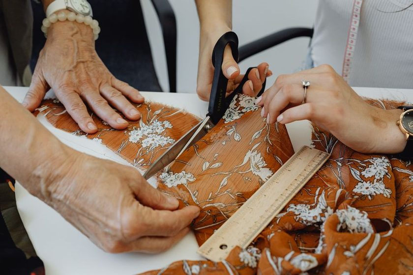
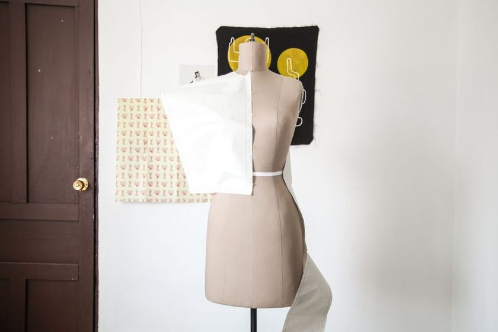
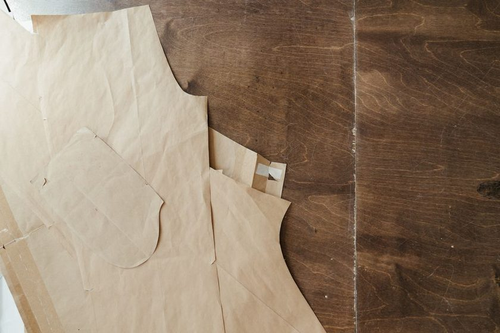
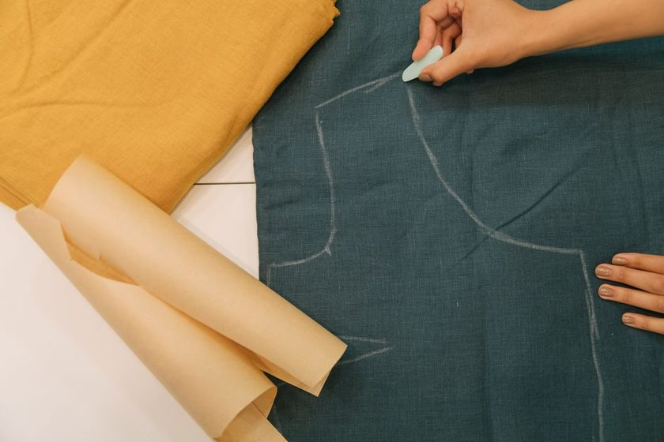
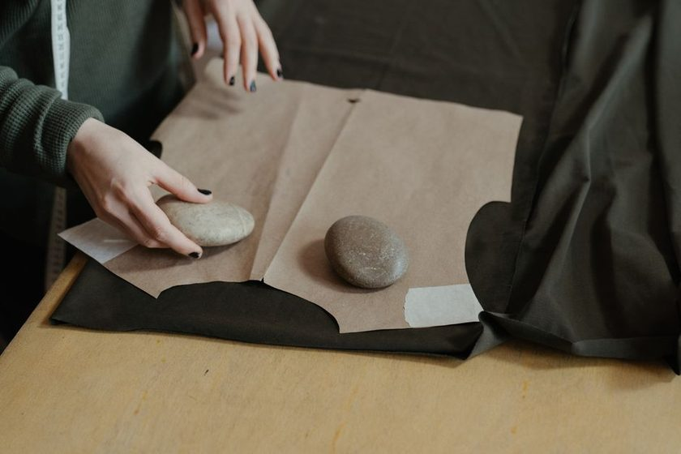

A block that actually fits
Blockdraft
Notes on drafting a personal block, adjusting it once, and reusing that same block for years — instead of buying a new pattern for every new project. Measurements taken over the clothes a garment will actually be worn with, not over bare skin under fitting-room light.

Recent notes
Short, specific write-ups from the cutting table — one block, one adjustment, one piece of assembly logic at a time.

Why Measuring Over the Clothes You Actually Wear Changes the Block
A tape measure over bare skin and a tape measure over the clothes you'll actually wear rarely agree — and the gap is exactly where most blocks go wrong.
Read the note →
The One-Adjustment Rule: Fixing a Block Once Instead of Every Muslin
Instead of chasing fit issues garment by garment, this note walks through correcting the block itself, once, so every piece cut from it after starts from true.
Read the note →
Dart Rotation Explained: Moving Shaping Without Losing Fit
Shaping in a bodice block can move almost anywhere on the pattern without losing its function — this note traces the pivot points that make dart rotation predictable.
Read the note →
Sleeve Cap Ease: What the Numbers on Your Pattern Actually Mean
The ease figure printed on a sleeve pattern is a starting point, not a rule — this note breaks down what actually drives how much a cap should measure over the armscye.
Read the note →
Notches That Earn Their Keep: A Marking System for Repeat Sewing
A consistent notch system turns pattern matching into a five-second glance instead of a guessing game at the ironing board.
Read the note →
Building a Skirt Block With Two Darts Instead of One
One dart per half distributes waist suppression unevenly on most bodies — this note works through drafting a two-dart skirt block instead.
Read the note →
Why Seam Allowance Consistency Matters More Than Seam Allowance Size
A pattern with three different seam allowances hidden across its pieces causes more fitting trouble than any single allowance width does.
Read the note →
Paper Block or Cloth Sloper: Choosing the Master Copy That Lasts
A paper master copy tears at the fold eventually — this note compares paper and cloth slopers as long-term masters.
Read the note →
Reading a Commercial Pattern Against Your Own Block Before You Cut
Laying a commercial pattern piece over a personal block before cutting shows exactly where a size is going to fight the body — before a stitch is sewn.
Read the note →Blockbook
Blockbook keeps every block, every adjustment note, and every piece measurement in one place — so the next garment starts from a block that already fits, not a fresh muslin.
See how Blockbook worksNotes from the cutting table
One short note a month — a block adjustment, a fitting observation, or a piece-assembly habit worth keeping. No spam, unsubscribe anytime.
About this journal
Blockdraft is written by a small group of home sewists who got tired of refitting a new pattern for every project. What started as shared notes between three people comparing bodice blocks turned into a running record of what actually works: how to measure, when to trust a number and when not to, and how to fix a block once so it keeps fitting the next time it's traced.
More about Blockdraft →